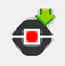

/ATELIER PYTHON
Introduction
Lors de cet atelier, tu vas apprendre à programmer la carte BBC Micro:bit à l’aide du langage
de programmation Python.
Tu vas devoir surmonter un maximum de défis pour gagner tes badges de
développeur Python :
| 2 défis : Débutant | 4 défis : Confirmé | 6 défis : Expert |
Pour y arriver, tu disposes:
- d’une carte micro:bit et de son câble USB

- d’un ordinateur portable sur lequel est installé l’éditeur de code TigerJython
- d’un guide de démarrage, te permettant de prendre en main l’environnement
- d’un mémo récapitulant les principales fonctionnalités du langage Python
- d’une liste de défis à relever
- le menu à gauche te permet de naviguer facilement de l’un à l’autre
A toi de jouer! Bonne chance!
Guide de démarrage
Retrouve ici tout ce dont tu as besoin pour débuter:
-
Un programme Python est un texte qui permet de “commander” un ordinateur (la carte micro:bit est un petit ordinateur). Ce texte est composé d’une suite d’instructions (une par ligne). Dans notre cas, ce programme est exécuté par un interpréteur situé dans la carte.
-
Le texte ne doit comporter aucune erreur, sinon l’interpréteur signale un problème dans la console (voir plus loin) lors de l’exécution et s’arrête. L’éditeur TigerJython peut aussi te signaler certaines erreurs à l’avance, avant l’exécution.
-
L’indentation du texte est importante, cela signifie que le programme doit être structuré par des décalages de texte lors de l’utilisation de certaines instructions (
if,while,for, etc. ). Une mauvaise indentation empêche l’exécution du programme. Ces décalages s’effectuent avec la touche tabulation du clavier:
-
Les lignes commençant par
#ne sont pas prises en compte par l’interpréteur. Elles permettent de faire des commentaires, de donner des explications sur le programme pour faciliter sa compréhension par les autres lecteurs.
Exemple:
#Cette ligne ne sera pas prise en compte - Les programmes qui utilisent la carte micro:bit doivent absolument commencer par:
from microbit import *- Pour téléverser un programme que tu as écrit dans l’éditeur de code TigerJython
vers la carte micro:bit, il suffit de cliquer sur le bouton :
 - Pour relancer un programme chargé dans la carte, il suffit d’appuyer sur le bouton “Reset” à l’arrière de la carte.
- La fonction
print()permet d’écrire dans la console. C’est une sorte de journal dans lequel l’interpréteur peut écrire pendant l’exécution du programme. Ce journal peut être utile au programmeur pour voir ce qu’il se passe lors de l’exécution. Dans l’éditeur de code TigerJython, le fait de téléverser le programme dans la carte lance automatiquement une fenêtre console “MicroBitManager”.
Exemple:
Dans le code:
print("Bonjour")Dans la console:
Mémo Python
Retrouve ici un récapitulatif des principales fonctionnalités du langage Python:
Variable
Permet de garder en mémoire des informations au cours de l’exécution.
Exemple:
#Donne la valeur 2 à la variable var1
var1 = 2
#Donne la valeur 3 à la variable var2
var2 = 3
#Ajoute 1 à la variable var2
var2 = var2 +1
#Calcule un produit puis l'affecte à la variable var3
var3 = var2*var1
#Ecrit dans la console la valeur de la variable var3
print(var3)
Dans la console:
>>> 8
Conditionnelle
Permet d’exécuter différentes instructions sous certaines conditions.
if <condition1>:
#Si la condition 1 est vérifiée, execute le bloc d'instruction 1
<bloc_instruction1>
elif <condition2>:
#Sinon, si la condition 2 est vérifiée, execute le bloc d'instruction 2
<bloc_instruction2>
else :
#Sinon, execute le bloc d'instruction 3
<bloc_instruction3>
Exemple:
var1 = 7
if var1 < 0:
print("Inférieure à 0")
elif var1 == 0:
print("Egale 0")
else:
print("Supérieure à 0")
Dans la console:
>>> Supérieure à 0
Remarques :
- Le nombre de “cas” est variable. On peut utiliser: un
ifseul, le coupleif/elseseul ou accompagné d’un ou plusieurselif. - Pour tester une égalité il faut mettre deux signes “égale” :
==
Boucle bornée
Répète un bloc d’instruction un certain nombre de fois.
for <variable> in range(<nombre>):
#Répète un bloc d'instruction <nombre> de fois.
#La variable <variable> peut être utilisée dans la boucle, elle
#commence à 0 et est automatiquement augmentée de 1 à chaque tour
<bloc_instruction>
Exemple:
for var1 in range(6):
print("Dans la boucle, valeur de var1: ")
print(var1)
print("Plus dans la boucle")
Dans la console:
>>> Dans la boucle, valeur de var1: 0
Dans la boucle, valeur de var1: 1
Dans la boucle, valeur de var1: 2
Dans la boucle, valeur de var1: 3
Dans la boucle, valeur de var1: 4
Dans la boucle, valeur de var1: 5
Plus dans la boucle
Boucle non bornée
Répète un bloc d’instruction tant qu’une condition est vraie.
while <condition>:
#Répète le bloc d'instruction tant que la condition est vraie
<bloc_instruction>
Exemple:
var1 = 6
while var1 > 0:
print("Dans la boucle, valeur de var1: ")
print(var1)
var1 = var1-1
print("Plus dans la boucle")
Dans la console:
>>> Dans la boucle, valeur de var1: 6
Dans la boucle, valeur de var1: 5
Dans la boucle, valeur de var1: 4
Dans la boucle, valeur de var1: 3
Dans la boucle, valeur de var1: 2
Dans la boucle, valeur de var1: 1
Plus dans la boucle
Fonction
Permet d’isoler un ensemble d’instructions qui réalisent la même tâche mais avec des paramètres différents.
def <nom_fonction> (<liste_paramètres>):
<bloc_instruction>
Exemple:
#La définition de la fonction se fait avant son utilisation.
#Ici, on définit une fonction qui calcule si un triangle est rectangle,
#elle prend trois paramètres en entrée (a,b et c) correspondants aux longueurs
#des côtés (a étant le plus grand):
def pythagore(a,b,c):
var1=a*a
var2=b*b+c*c
if var1 == var2 :
print("Rectangle")
else :
print("Non rectangle")
#On peut ensuite utiliser la fonction plus loin dans le programme en donnant
#des valeurs aux paramètres:
pythagore(5,3,4) #Le triangle ayant pour longueurs 5, 3 et 4 est-il rectangle?
pythagore(7,6,5) #Le triangle ayant pour longueurs 7, 6 et 5 est-il rectangle?
Dans la console:
>> Rectangle
Non rectangle
Remarque:
Les fonctions n’ont pas forcément de paramètre. De plus, certaines peuvent retourner une valeur. Par exemple, la
fonction temperature() renvoie la température du microprocesseur de la carte et ne prend aucun
paramètre en entrée :
var1=temperature()
print(var1)
Les défis
Retrouve ici les défis que tu dois relever:
Défi 1: Le smiley
Action 1
Afficher un smiley sur l’écran de la carte micro:bit

Aide:
- La fonction:
display.set_pixel(x,y,i)permet d’allumer la LED de la colonnex(nombre entre 0 et 4) et de la ligney(nombre entre 0 et 4) avec une intensitéi(nombre entre 0 et 9). Exemple:display.set_pixel(1,2,9)allume la LED située à la colonne 1 de la ligne 2 avec l’intensité 9.
Défi 2: La pluie
Action 1
Représenter une goutte d’eau qui tombe dans la 1ère colonne.
Aide:
- La fonction
sleep(t)met en pause l’exécution pendanttmillisecondes. Exemple :sleep(1000)suspend l’exécution pendant 1 seconde.
Action 2
Faire tomber dix gouttes de suite dans la 1ère colonne.
Action 3
Faire tomber une goutte une fois dans chaque colonne.

Action 4
Faire tomber dix fois une goutte de pluie dans des colonnes choisies aléatoirement.
Aide
- La fonction
randint(x,y)retourne un nombre entier aléatoire compris entre les nombres entiersxetyinclus. Pour pourvoir utiliser cette fonction, il faut ajouterfrom random import *au début du programme. Exemple:randint(0,10)retourne un nombre aléatoire compris entre 0 et 10.
| Tu as réussi ces deux premiers défis ? Félicitations! Tu as gagné ton badge de développeur Python débutant ! |
|---|
Défi 3: Pierre-feuille-ciseaux
Action 1
Afficher de façon aléatoire à l’écran: une pierre, une feuille ou des ciseaux.
Aide
-
Les instructions suivantes permettent d’afficher respectivement une pierre, une feuille ou des ciseaux à l’écran:
display.show(Image("00000:09990:99999:09990:00000"))
display.show(Image("99900:90090:90009:90009:99999"))
display.show(Image("96009:69090:00900:69090:96009")) -
Une fois que le programme fonctionne, appuie sur la touche “Reset” à l’arrière de la carte si tu veux le tester plusieurs fois. Tu peux essayer de jouer contre la carte!
Défi 4: Jeu de rapidité
Action 1:
Le but du jeu est de réussir à appuyer plus de 30 fois sur le bouton A en 5 secondes à partir de l’affichage à l’écran du “Go!”. Tant que ce nombre n’est pas atteint, le jeu recommence, le score précédent étant affiché à l’écran. Si le joueur arrive à 30, on affiche à l’écran “Gagné!”.

Aide:
- La fonction
display.scroll(texte)permet d’afficher une texte ou la valeur d’une variable à l’écran de la carte. Exemple:display.scroll("Bonjour")ouvar1=4puisdisplay.scroll(var1) - La fonction
button_a.get_presses()renvoie le nombre d’appuis sur le bouton A effectué depuis le dernier appel de la fonction. Chaque appel remet donc le compteur à zéro. - Penser à la fonction
sleep(t)pour attendre les cinq secondes.
| Tu as réussi ces deux défis supplémentaires ? Bravo ! Tu as gagné ton badge de développeur Python confirmé! |
|---|
Défi 5: La station météo
Action 1
Afficher à l’écran une image différente selon la luminosité ambiante:
- entre 0 et 10 inclus : nuit étoilée
- entre 10 et 150 inclus : un parapluie
- entre 150 et 255 : un soleil
Aide
-
L’instruction
while True :permet de créer une boucle infinie -
La fonction
display.read_light_level()renvoie la luminosité qui arrive sur l’écran sous la forme d’un nombre entier entre 0 et 255 . Il faut suspendre l’exécution pendant 1 seconde (sleep(1000)) après l’appel de la fonction pour laisser le temps à la carte de répondre. -
Les instructions suivantes permettent d’afficher respectivement une image de nuit étoilée, un parapluie et un soleil à l’écran:
display.show(Image("40404:04040:40404:04040:40404"))
display.show(Image("06660:66666:00600:60600:06600"))
display.show(Image("60606:08880:68986:08880:60606")) -
Tu peux utiliser la fonction
print()pour afficher la luminosité dans la console au fur et à mesure de l’exécution.
Défi 6: Le labyrinthe
Le but de ce dernier défi est de créer un labyrinthe que l’on peut parcourir à l’aide d’une “bille” que l’on dirige avec les boutons A et B. (A = vers la gauche, B=vers la droite, A+B = vers le haut)
Le programme étant plus complexe, nous allons le découper en utilisant des fonctions.
Le squelette du programme est le suivant, tu peux le copier-coller dans ton éditeur de code TigerJython
from microbit import *
#################
### Variables ###
#################
#Conserve en mémoire la position (colone et ligne) de la bille
#Les variables sont initialisées à 4
col_bille = 4
lig_bille = 4
#################
### Fonctions ###
#################
# Dessine les murs du labyrinthe
def dessine_mur():
print("Dessine les murs")
# A complèter...
# Déplace la bille dans la direction indiquée par le paramètre
def deplace_bille(direction):
#Rend les variables lig_bille et col_bille modifiables depuis la fonction
global lig_bille, col_bille
print("Deplace dans la direction: ",direction)
# A compléter...
###########################
### Programme principal ###
###########################
#Appelle la fonction dessine_mur()
dessine_mur()
# Affiche la bille au départ
display.set_pixel(col_bille,lig_bille,9)
# Boucle infinie du jeu
while True:
sleep(150)
#Si les deux boutons sont appuyés en même temps
if button_a.is_pressed() and button_b.is_pressed():
#Appelle la fonction deplace_bille(direction) avec le paramètre "H"
deplace_bille("H")
#Sinon, si le bouton A est appuyé
elif button_a.is_pressed():
#Appelle la fonction deplace_bille(direction) avec le paramètre "G"
deplace_bille("G")
#Sinon, si le bouton b est appuyé
elif button_b.is_pressed():
#Appelle la fonction deplace_bille(direction) avec le paramètre "D"
deplace_bille("D")
Action 1:
Compléter la fonction
dessine_mur()qui dessine les “murs” du labyrinthe puis tester le programme.
Action 2:
Compléter la fonction
deplace_bille(direction)pour qu’elle déplace la bille dans la direction donnée par le paramètre : “H” > vers le haut, “G” > vers la gauche et “D” > vers la droite.
Aide:
- Il est possible de détecter les collisions avec les murs en utilisant la fonction
display.get_pixel(x,y)qui retourne un nombre entre 0 et 9 représentant l’intensité lumineuse de la LED située à la colonnexde la ligney.
Action 3:
Amuse toi à modifier le labyrinthe pour le rendre plus complexe.
| Tu as réussi ce dernier défi ? Bravo! Tu as gagné ton badge de développeur Python expert! |
|---|